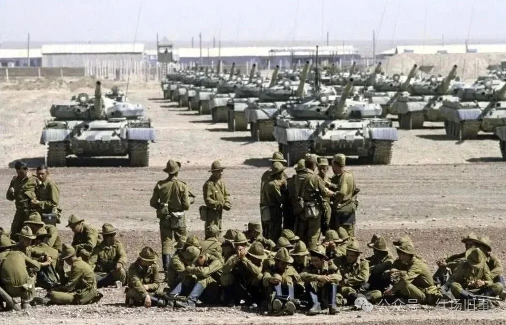
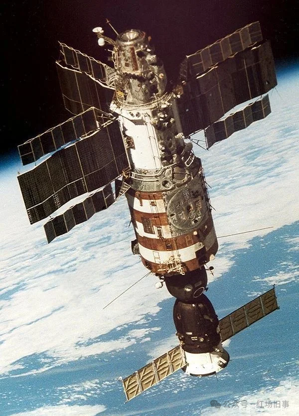
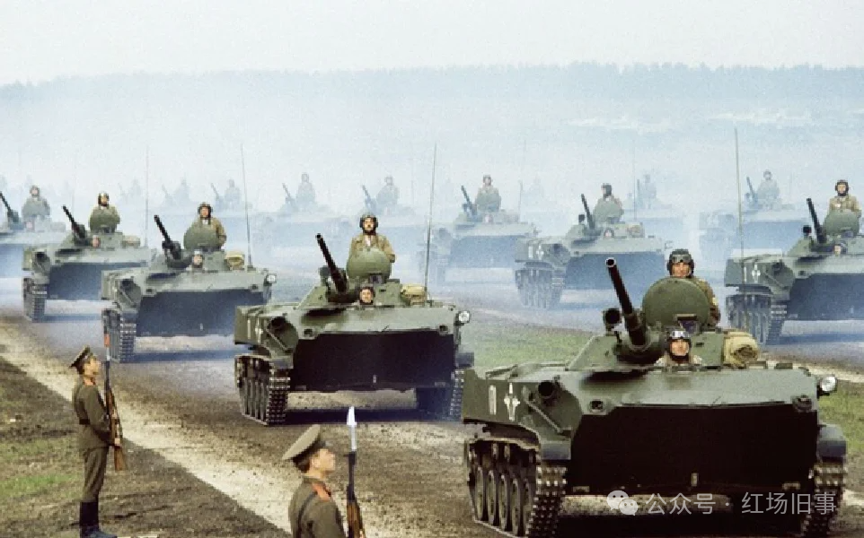
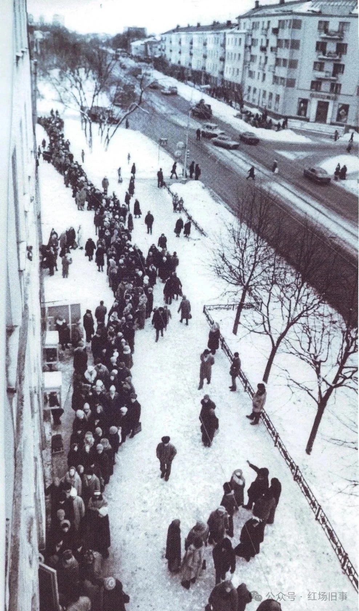

军工优先的代价：苏联如何用重工业透支了自己的未来
文字与图片版权归各自权利人所有。 查看公众号原文 ↗
冷战巅峰：苏联看起来无比强大，内部已在腐烂
1975年，两个画面画面一：红场阅兵。SS-18“撒旦”洲际导弹缓缓驶过，西方武官脸色凝重。这种导弹可携带10个分导式核弹头，一枚足以毁灭一个中等国家。同年，苏联战略核力量在数量上首次超过美国。画面二：莫斯科面包店。清晨6点，队伍已排到街角。退休老太太在零下15摄氏度的寒风里跺着脚，只为买到最普通的黑面包——不是总有的那种。这就是20世纪70年代的苏联：核武库世界第一，坦克数量冠绝全球，宇航员在天上飘着，老百姓在地上排着。勃列日涅夫曾得意地说：“苏联已成为强大的社会主义国家，没有任何力量能把我们拉离这条道路。”他没说的是：这条道路正把国家拉向深渊。
一、全球扩张：从安哥拉到阿富汗勃列日涅夫时期的苏联，到处想证明自己的力量。非洲：1975年，苏联通过古巴代理人派兵介入安哥拉内战。数万名古巴士兵在苏联装备和顾问支持下，打退了南非和美国的干预。莫桑比克、埃塞俄比亚也倒向苏联。拉丁美洲：除了古巴，苏联还支持尼加拉瓜桑地诺解放阵线，美国的“后院”处处冒烟。中东：苏联是阿拉伯国家的主要武器供应国，叙利亚、伊拉克、南也门都靠苏联的坦克撑腰。亚洲：支持越南入侵柬埔寨，在金兰湾建立东南亚第一座永久性军事基地。1979年，扩张达到顶点——苏军入侵阿富汗。10万大军越过边境，成了它的“越南战争”，十年泥潭，上万伤亡，最终狼狈撤出。

表面看，苏联触角伸到全球每个角落。但每伸一次手，就要多流一次血。
二、航天领先：加加林的骄傲1961年4月12日，尤里·加加林进入太空，成为人类历史上第一个进入太空的人。此后十年，苏联航天一路领先：第一位女宇航员、人类首次太空行走、第一个空间站。美国人被吓坏了，肯尼迪宣布“十年内把人送上月球”，就是被加加林刺激的。1969年美国登月成功，苏联输掉登月竞赛，但立刻转向长期空间站。20世纪70年代，“礼炮”系列空间站接连上天。1986年，“和平号”升空，成为人类第一个长期有人照料的空间站，一直运行到2001年。

礼炮—1号空间站但航天的光芒掩盖不了地面的暗淡。20世纪60年代，苏联每年航天预算占GDP的1.5%以上，是美国的3倍。这些钱从轻工业、农业、住房建设里挤出来。当加加林在天上俯瞰地球时，他的同胞们正为买一块面包排两小时队。这种反差是苏联模式的缩影：天上的成绩越辉煌，地下的窟窿就越大。
三、军事无敌：华约的钢铁洪流1981年，苏联“西方-81”演习。西方观察员看到终生难忘的场景：数千辆坦克在平原上同时突击，装甲洪流仿佛永远打不完。

当时苏军在东德驻扎着19个师、37万人、7000辆坦克，加上其他华约国家，整个中欧战线上部署着约200万军队、5万辆坦克。北约预计自己撑不过两周。核武器方面，苏联更疯狂：20世纪70年代末，战略核弹头数量超过美国SS-18“撒旦”洲际导弹，单枚威力是美国“民兵”的6倍战略火箭军是苏军“第一军种”勃列日涅夫说：“我们的战略火箭军可以随时把任何侵略者从地球上抹掉。”这不是吹牛。但无敌的军队需要无敌的投入。西方估计，20世纪70年代苏联军费占GDP的15%—20%，而美国只有5%—6%。苏联人均GDP不到美国一半，却要维持比美国还庞大的军队——这意味着：每个苏联人要用两倍于美国人的收入比例，去养一支可能永远用不上的军队。
四、民生拉胯：全民短缺的常态军费花了那么多，留给老百姓的自然就少了。轻工业长期被忽视。苏联计划委员会优先保证钢铁、石油、坦克，至于衣服、鞋子、家具——“反正饿不死就行”。结果：老百姓有钱没处花，商店货架空着。短缺成为常态。20世纪70年代，一个普通苏联家庭的生活：早上起床，发现黄油没了——去商店，没有，下周二才有中午想买鞋——商店只有三种款式，且只有40码以上晚上看电视——黑白的，只有一个频道排队是全民运动。苏联人发明了一个词：“достать”（搞到）。不是“买”，是“搞到”。肉、香肠、紧俏的牛仔裤，怎么搞？排队、托关系、贿赂售货员。一个笑话在苏联流传：问：什么是共产主义？答：就是东西多到人们不用排队。问：那为什么苏联还没实现共产主义？答：因为东西不够，但队已经排好了。更讽刺的是，特权阶层不在这个队伍里。他们有特供商店、特供餐厅，商品齐全、质量上乘。当普通人为了几根香肠排两小时队时，官员的妻子可以用同样的钱买下整扇猪肉。
为什么会这样？答案很简单：军工优先的体制必然导致民生崩溃。苏联计划经济有一条铁律：重工业>轻工业>农业。重工业里，军工排最高优先级。每年资源分配，军工先挑，剩下的给民用重工业，再剩下的给轻工业，最后剩点渣才给农业。这个逻辑在斯大林时代说得通——那时苏联面临生死存亡。但到了20世纪70年代，苏联已拥有毁灭世界的能力，体制却停不下来。为什么停不下来？第一，既得利益集团。军工联合体养活了上千万人——科学家、工程师、技术工人。削减军费，他们往哪安置？第二，体制惯性。苏联计划经济是为重工业设计的，轻工业和农业在这个系统里天生水土不服。第三，竞争心态。勃列日涅夫的口号是“与西方进行历史性竞赛”。导弹数量赛、坦克数量赛、宇航员数量赛。这些赛赢了，面包却输了。结果：导弹越来越多，黄油越来越少；坦克越来越先进，香肠越来越难买。

1977年，勃列日涅夫签署新宪法，宣布苏联已建成“发达社会主义社会”。当时苏联核武器比美国多，坦克比北约多，宇航员在天上飞着，军舰在全球游着。但腐烂已在内部蔓延。经济上，增长率从“八五”计划的7.5%跌到“十五”计划的3.8%。黑市猖獗，投机倒把成风。社会上，酗酒成为灾难。苏联人均酒精消费量世界第一，每年因酗酒死亡约50万人。道德上，理想主义彻底消失。年轻人不再相信共产主义，只想搞点外汇券、倒腾点西方货。一个苏联作家写道：“我们这一代人，是在谎言中长大的。后来我们知道那是谎言，但已经太晚了——我们已经学会了怎么在这个谎言里活下去。”1975年，赫鲁晓夫去世。他的墓碑黑白相间——一半白，一半黑，象征着毁誉参半的一生。如果为勃列日涅夫时代设计墓碑，或许应该是这样：外面包着厚厚的钢铁，上面刻着“世界超级大国”；里面是空的，只有一个标签：小心轻放，内无实物。这就是冷战巅峰期的苏联：看起来强大到没朋友，实际上烂到不想改。这种“强大”能撑多久？